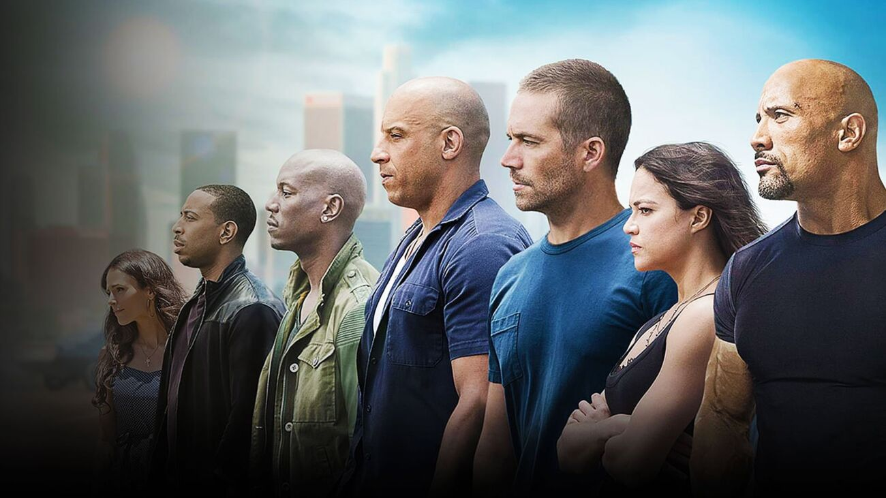

História da Franquia
Quando o primeiro filme de “Velozes e Furiosos” foi lançado há duas décadas, o diretor Rob Cohen e os
roteiristas Gary Scott Thompson e Davi Ayer não tinham noção do sucesso que a história seria entre o
público. Basta analisar seu elenco de protagonistas: Paul Walker (1973 - 2013) tinha atuado em
papéis secundários em longas-metragens voltados para adolescentes, como “Ela É Demais” (1999); Vin
Diesel também tinha poucos trabalhos em sua carreira e havia acabado de estrelar a obra de
ficção-científica “Eclipse Mortal” (2000). Seus nomes ainda eram desconhecidos entre estadunidenses
e espectadores do exterior. E, mesmo que a crítica especializada mostre suas opiniões negativas a
cada novo lançamento da saga, tornou-se um dos grandes sucessos da indústria cinematográfica.Já na
primeira produção, arrecadou mais de 207 milhões de dólares - o quíntuplo do custo para o orçamento.
A fórmula para o êxito se baseou em seu enredo aparentemente simples, repleto de violência e carros
destruídos. Mas a narrativa, ao passo que utiliza todos os clichês do gênero de ação, também mostra
algo além: a força da amizade e da família em meio ao caos das realidades de seus personagens.